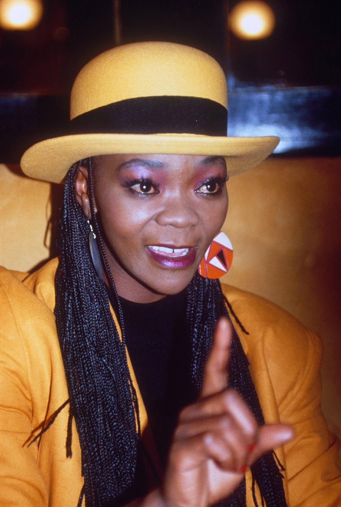

Breanda Fassie was a South African hero because she inspied a generation of woman through her personal power and freedom
of expression by refusing to conform to society and her passion for living life on her own terms through a difficult
post aparthei era.
more about Brenda fassie

×
Brenda Nokuzola Fassie,affectionately called MaBrrr by her fans died at the age of 39 on May 9, 2004 in
hospital after slipping into a coma following reports that revealed that she had taken an overdose of cocaine.
At the age of 16, she left Cape Town for Johannesburg to seek her fortune as a singer. Fassie first joined the
vocal group Joy (filling in for one of the members who was on maternity leave)and later became the lead singer
for a township music group called Brenda and the Big Dudes....In 1985 she gave gave birth to her son, Bongani
and went on to marry Nhlanhla Mbambo in 1989 but divorced in 1991. Around this time she became addicted to
cocaine. Known best for her songs Weekend Special and Too Late for Mama among others, she was dubbed “The
Madonna of the Townships” by Time magazine in 2001.Once called the local Queen of Pop, the Girl with the
Golden Voice, and South Africa’s own Madonna, she is now compared to Billie Holliday, Edith Piaf and others
who died tragic, drug-related deaths.Many believe she is the sole architect of her own demise, that she
alienated her loved ones through arrogance and an erratic lifestyle. Others—among them members of the
Hillbrow drug and prostitute world—insist that, at heart, Fassie is an insecure, lonely child with a
woman’s voice and body. Her hunger for approval and generosity lay her open to abuse, and drugs served
to fill the aching hole in herI met Brenda Fassie in 1986, when the 21-year- old dynamo had already
become South Africa’s most popular singer for decades. Born in Langa’s Masakane Square in Cape Town,
she took the short route to success. Inspired by her pianist mother, at the age of four she had already
formed her own group, called the Tiny In 1979, she was brought to the Golden City, where she caused an
immediate sensation, first with the group Joy, then with Blondie and Papa and, finally, with the Big Dudes,
with whom she recorded the chart topping Weekend Special By 1986, her record sales had surpassed all those
of her counterparts and Weekend Special had been released in Britain. She was Brenda the Bazooka, the poor
pint-sized kid with the powerhouse voice. “You just tell the world,” she said, “that Brenda Fassie is here
to stay.” Our next encounter was during 1994, in the bar of the Europa Hotel in Joubert Park, where she was
rehearsing for a gig at the Razzmattaz club. She was still a bundle of uncontained energy. But I noted that
her eyes were heavy and haunted, her speech was slurred and she looked much older than her 29 years.
“Journalists have ruined my life with their lies,” she complained bitterly. “People I cared about have turned
their backs on me. But Brenda will be back with a bang.” It sounded like a whimper.
The last four years have been rough. She was charged with fraud in 1990, with her then- husband Nhlanhla Mbambo
and her former boyfriend Eric Mbeko, though charges were later dropped. She had been sued and her music boycotted
after failing to appear at several township concerts. In 1992, she was convicted of assaulting Sowetan photographer Mbuzeni Zulu.
But public disgrace paled by comparison to her private pain. Her marriage ended in 1991, with her calling Mbambo a leech, a lecher
and a wife- beater. In 1992, her former lover, a household name in Durban’s gay circles, went public with an account on an
087 telephone line of his miserable life with the volatile songbird.
Her mother died in 1993. In December of that year, she was dumped by manager Sello Chicco Twala, just
months after he had “rescued” her from former manager Peter Mbolwekwa.
When we spoke in 1994, she was reunited with her first manager, Peter Snyman and, in October that year,
she released Abantu Bayakhuluma. It was not well received. The woman whose personal agony had, until now,
been masked by an overwhelmingly joyous voice, was stagnating in a creative quagmire. She was still doing
variations of Weekend Special.She was also homeless, having lost her house in Fleurhof and been evicted
from her apartment in Lonehill. Her son Bongani was thrown out of school for failing to pay fees.
And, throughout this, the drug abuse continued, abated only by brief spells at the Riverfield
rehabilitation clinic. Each time she would emerge, rejuvenated and triumphant, proclaiming:
“Brenda, the real Brenda, is back with a bang.” “Brenda’s problem can be described as part of the
‘too much, too soon’ syndrome suffered by many talented individuals,” says a psychologist who treated
her at Riverfield. “She was seduced by stardom at an early age, before she had developed a sense of
herself. While she exudes outer confidence, on the inside she is desperately afraid. She doesn’t know
what is her.I spoke to Fassie briefly this week, over the phone. She refused to answer questions about
cocaine, nor would she confirm or deny that she had threatened to spill the beans on her drug- taking
music friends. She simply cried, and told me how much she loved Poppie and how sorry she was. Then the
phone went dead.